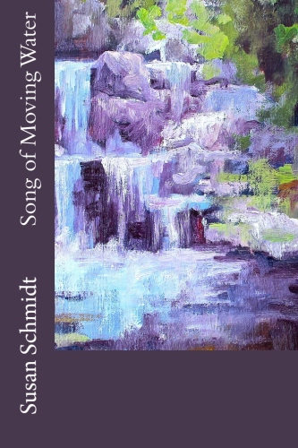

Song of Moving Water
As paddler, flyfisher, bass fiddler, gardener, and Quaker naturalist— SUSAN SCHMIDT writes about river and forest ecology, bluegrass music, square dancing, chestnut trees, quilting, endangered species, local food, and environmental organizing in her new young-adult novel, SONG OF MOVING WATER. She has worked as science-policy analyst, sailboat captain, and professor of literature and environmental decision-making. Susan now edits books, with the same mindfulness as pruning apple trees, and walks beaches with her Boykin Spaniel. Her new book of poems is Salt Runs in My Blood.

“Don’t blame yourself for other people’s decisions,” Aunt Ruby tells Grace. At seventeen, Grace feels guilty that her father drowned in the river when she was ten. Just when she has moved back home, the power company proposes a dam that will flood her family farm. She builds confidence to raise her voice.
With a backdrop of the Appalachian Mountains in Virginia, Song of Moving Water is a young woman's coming-of-age story and a fictional environmental impact statement. When Grace returns to her father's homeplace seven years after his death, a proposed hydroelectric dam threatens the remote valley. Learning about farming and faith from her Aunt Ruby and about foraging herbs from neighbor Amos, Grace begins to value the self-sufficient community in contrast to her mother’s social whirl in Richmond. In the country, Grace goes to a square dance at the elementary school; in the city, she goes to a debutante party at the Country Club. Grace plans on college, but her childhood friend Sally Bee is already married with two babies. Grace has a crush on Sam, aquatic ecologist and Quaker pacifist who is looking for an endangered species to stop the dam. While canoeing with Sam, Grace learns how to read a river and the Tao of water. In contrast to Sam, Grace's stepbrother Jared is a vain business student who slaps her in a political argument. With comic rivals, Amos and Farley, the half-Indian/half-Black musician up the creek, Grace goes to the Galax Fiddle Festival, and Farley competes in the fiddle contest. Reclaiming her mountain heritage, Grace organizes neighbors to celebrate their river, and she sings to protest the dam that may flood her family farm. When she skinnydips in a mountain pool, Grace accepts her growing maturity and forgives her own gracelessness. Walking the woods, Amos shows Grace the flowering shrub, Hearts-a-Busting, to remind her to keep her heart open.
Susan Schmidt is available for readings: susu@susanschmidt.net.
Reviews
Susan Schmidt writes Song of Moving Water with the insight of a scientist, the imagery of a poet, and the big heart of one who loves the Appalachian highlands and their people. Poised on the cusp of adulthood, Grace comes back to McDowell County to learn what no classroom can teach: family secrets, spiritual knowledge, sexual stirrings—all against the backdrop of a newborn environmental movement. “Groundtruthing,” she calls it—ways of knowing the land—from a mountain man’s gift for hunting ginseng… to a woman’s skill at putting by food… to a scrappy Quaker ecologist’s understanding of the webs of life. This closely observed novel takes you deep into the embrace of the mountains. Valerie Nieman, author of Blood Clay and Neena Gathering
Susan Schmidt, PhD (252) 269-0032
| © 2012 Susan Schmidt. All Rights Reserved. |
Find Current Book Reading Schedule
 |
 |